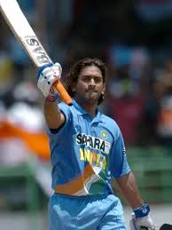
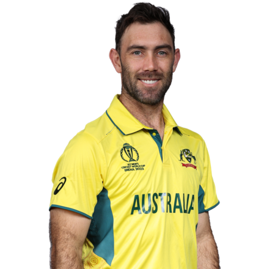
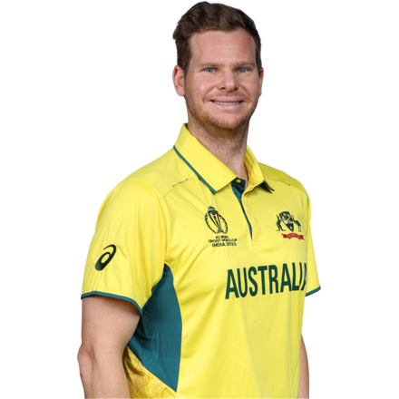
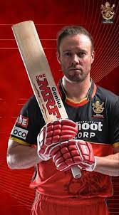

BatsmenInfo



MS Dhoni
MS Dhoni (born 7 July 1981) is an Indian international cricketer.

Glenn Maxwell
Glenn Maxwell (born 14 October 1988) is an Australian international cricketer.

Steve Smith
Steve Smith (born 2 June 1989) is an Australian international cricketer.

AB de Villiers
AB de Villiers (born 17 February 1984) is an South African international cricketer.